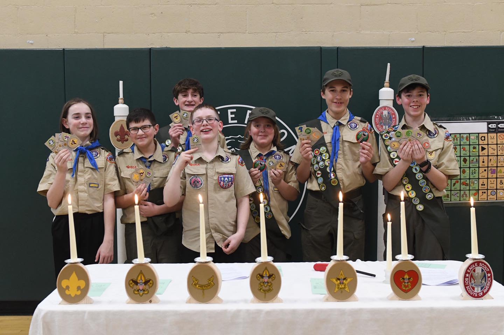
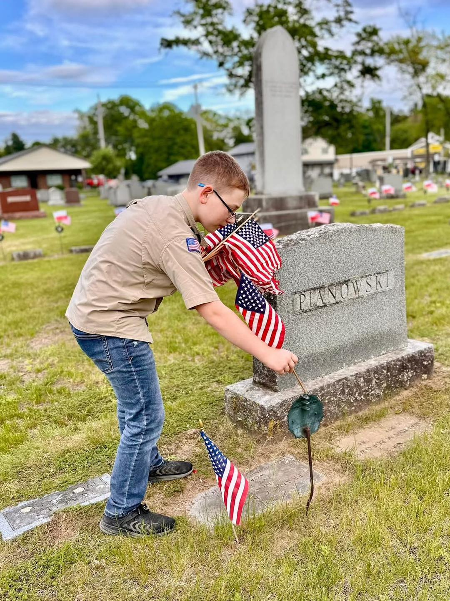
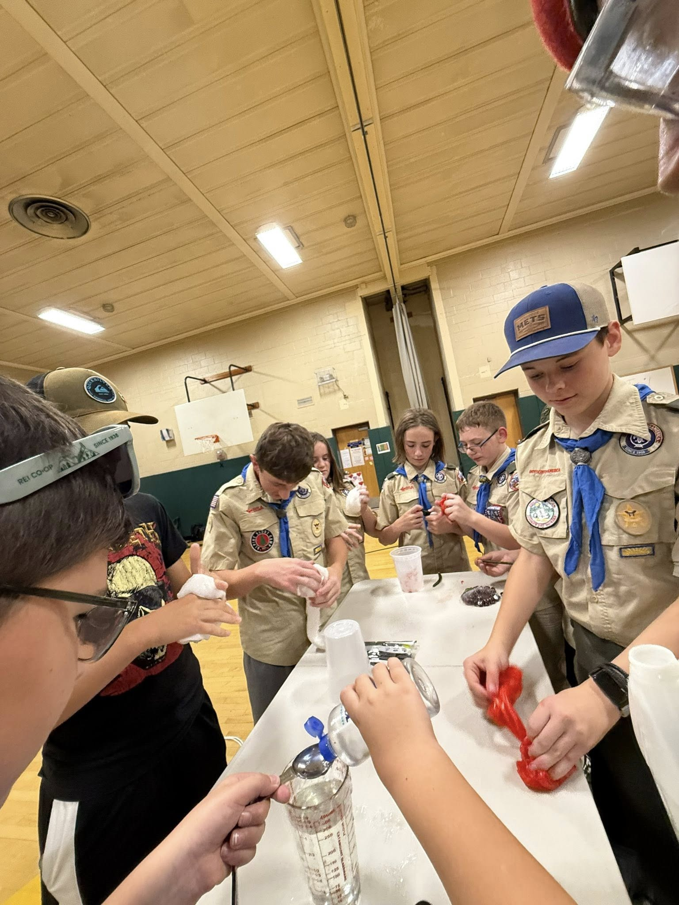

Adventure Starts Here
Troop 54 - Rotterdam's Family Scout Troop.
Building character, leadership, and lifelong friendships.
Why Scouting?
Scouts gain experiences and skills that last a lifetime
Leadership
Scouts learn to lead by doing - planning campouts, running meetings, and mentoring younger members.
Outdoor Adventure
From weekend camping to high adventure treks, Scouts explore the great outdoors year-round.
Community Service
Once a month, we volunteer at the Regional Food Bank in Latham instead of our regular meeting.
Lifelong Skills
First aid, cooking, navigation, financial literacy - Scouts build practical skills for life.
We're a Family Troop
As of 2026, Troop 54 proudly welcomes both male and female Scouts. Every young person deserves the chance to develop confidence, resilience, and leadership through Scouting - regardless of gender.
Our Scouts participate in the same activities, earn the same ranks, and build friendships that last a lifetime. Parents and families are an integral part of our troop community.
Learn More About Our Troop



What Scouts Do
From the campfire to the community, every week is a new adventure
Camping & Hiking
Monthly campouts, summer camp, and day hikes through New York's beautiful trails.
Merit Badges
Over 140 merit badges to explore - from robotics to wilderness survival to cooking.
Rank Advancement
Progress from Scout to Eagle Scout - each rank builds confidence, skills, and character.
High Adventure
Philmont, Sea Base, Northern Tier, and The Summit - once-in-a-lifetime expeditions for older Scouts.
Ready to Start the Adventure?
Come see what Troop 54 is all about. Visit a Monday meeting — no commitment, no uniform needed. Just show up and say hi.